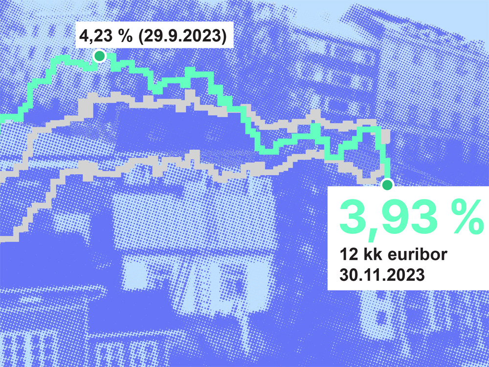
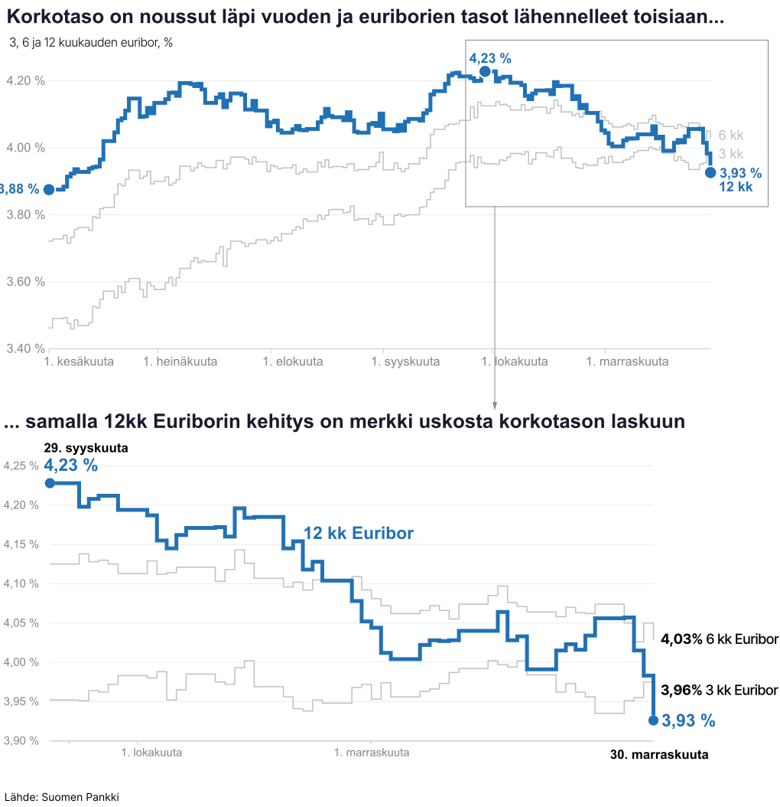

Asuntolainojen viitekorkona yleisesti käytetty 12 kuukauden euribor nousi tiistaina 4,208 prosenttiin maanantain 4,198 prosentista.
Euriborit nousivat vuonna 2022 erittäin nopeasti heijastellen muun muassa Euroopan inflaatiokehitystä ja keskuspankeilta odotettuja ohjauskoron nostoja.
Vuoden 2023 aikana sijoittajat ovat odottaneet ohjauskorkojen noston taittumista ja vaihtelevat näkemykset ovat aiheuttaneet sahaamista. Eri mittaisten euribor-korkojen tasojen läheneminen kertoo siitä, että sijoittajat odottavat joko koronnostosyklin päättyneen tai olevan lähellä.
Lyhyemmät korot käyttäytyivät tiistaina epäyhtenäisesti.
Kuuden kuukauden euribor noteerattiin 4,128 prosentissa, kun edellispäivän lukema oli 4,138 prosenttia. Kolmen kuukauden euribor nousi hiukan 3,964 prosenttiin edellispäivän 3,951 prosentista.
Euribor-korot lasketaan päivittäin kello 12 aikaan ja ne tulevat julkisiksi vuorokauden viiveellä.
Nopeissa ratkaisuissa Datawrapperilla saadaan kätevästi kaikki luvut näkyviin peruskaaviotyyppeihin.
Alla versio - käsintehty infograafi. pohjat d3:lla --> illustratorilla käsin "zoomaus"-ruutu. Tarkistaisin ajatuksen jutun toimittajan kanssa, ja zoomaisin syys-marraskuun laskuun, jos jutun kärki voisi olla että 12kk euriborin lasku enteilee alempaa korkotasoa.

Ja vielä asuntolainalaskuri:
Laskurilla voit kokeilla, miten lainan määrä, kokonaisvuosikorko ja kuukausittainen lyhennyserä vaikuttavat tasalyhennyslainan takaisinmaksuaikaan ja asiakkaan maksamiin korkoihin.
Tasalyhennyslaina on lainan lyhennystapa, jossa lainan pääomaa lyhennetään joka kuukausi kiinteällä, samansuuruisella summalla. Asiakkaan maksama kuukausierä koostuu tästä tasalyhennyserästä, jonka päälle lisätään kuukausittainen korko. Koska korko lasketaan lainan jäljellä olevalle pääomalle, korkokulut pienenevät pääoman laskiessa, ja asiakkaan pankille maksama kuukausierä pienenee ajan saatossa jos korkotaso pysyy samana:
3,93% on tämän päivän (30.11.2023) 12 kk Euribor-korko. Lisää määrään pankin marginaali jos haluat tarkastella oman lainasi tilannetta mikäli korko tarkastettaisiin tänään.